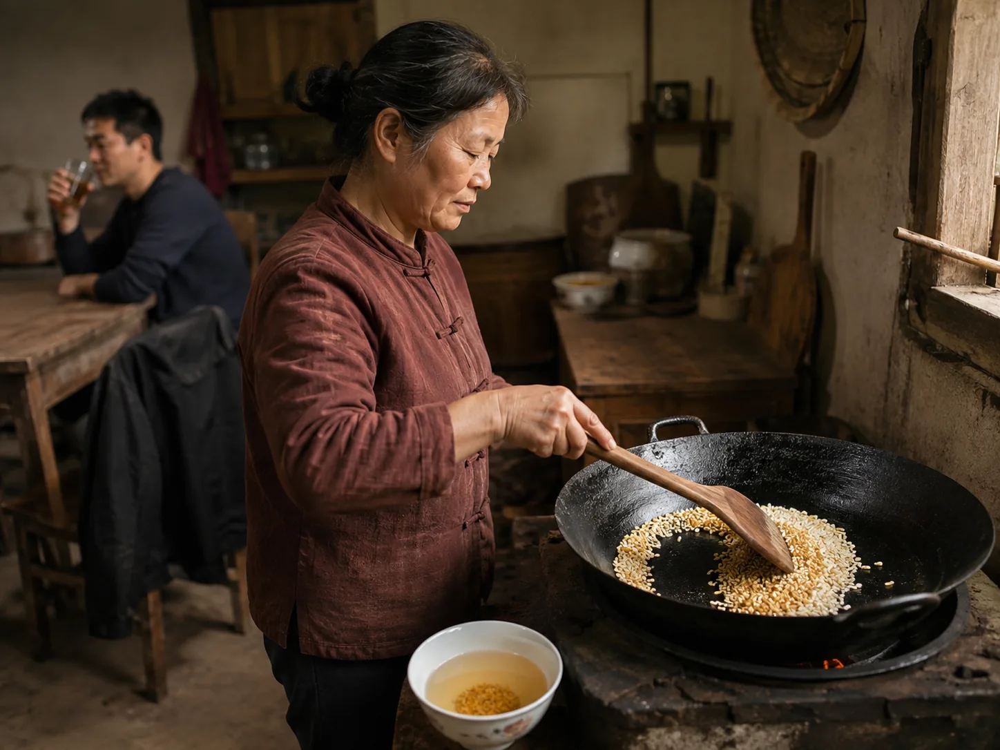

Toasted Rice Water from the Iron Wok
After my cousin returned from a village feast, his mother moved a small handful of raw rice around an empty iron wok until the grains browned.

Rice turning gold in iron
My cousin returned from a village feast with his jacket over one arm and asked for nothing more at the table. His mother listened, opened the rice jar, and scattered one small handful across an empty iron wok. I heard the dry grains travel in a circle before I smelled them changing. Behind her, he drank plain water and described the crowded tables.
She kept the wooden spatula moving so the rice colored unevenly but did not blacken. White grains became straw yellow, then several turned the brown of a paper bag. There was no oil in the wok and nothing else waiting on the cutting board.
A thin bowl after feasting
When the toasted smell reached the doorway, she drew the wok away from the strongest flame and added water along one side. The first hiss was brief. Soon the grains moved beneath a clear amber surface, dark at their tips but still holding their narrow shape, and my cousin sat nearby with an ordinary glass of water.
Plain rice congee softened white grains until the whole breakfast bowl became thick, while barley water left a pale grain drink cooling in its clay pot. This toasted rice water stayed thin but carried the earlier color of the dry iron wok into the bowl.
Brown grains beneath clear water
His mother did not arrange the work as a lesson for me. She lowered the flame, skimmed one floating husk with the corner of the spatula, and continued talking about who had attended the feast. The rice settled gradually, leaving more clear liquid visible at the top. A toasted smell remained in the empty part of the kitchen.
She poured one bowl and placed it at the far corner of the table. Several brown grains rested beneath the pale water while she wiped the iron wok and turned it upside down over the cooling stove ring.